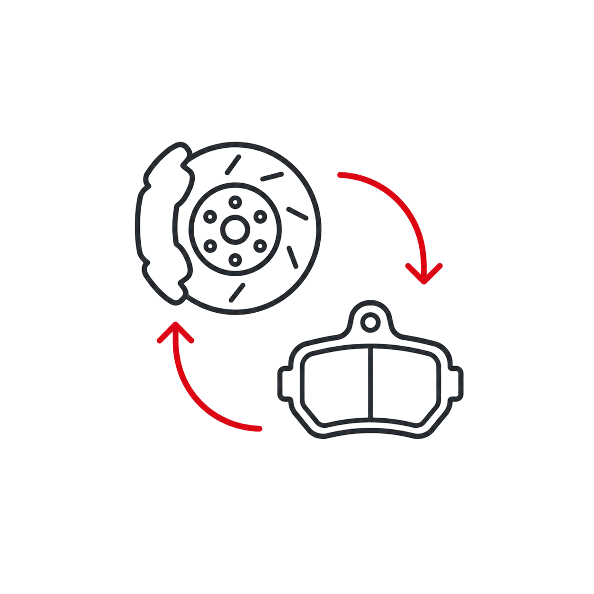
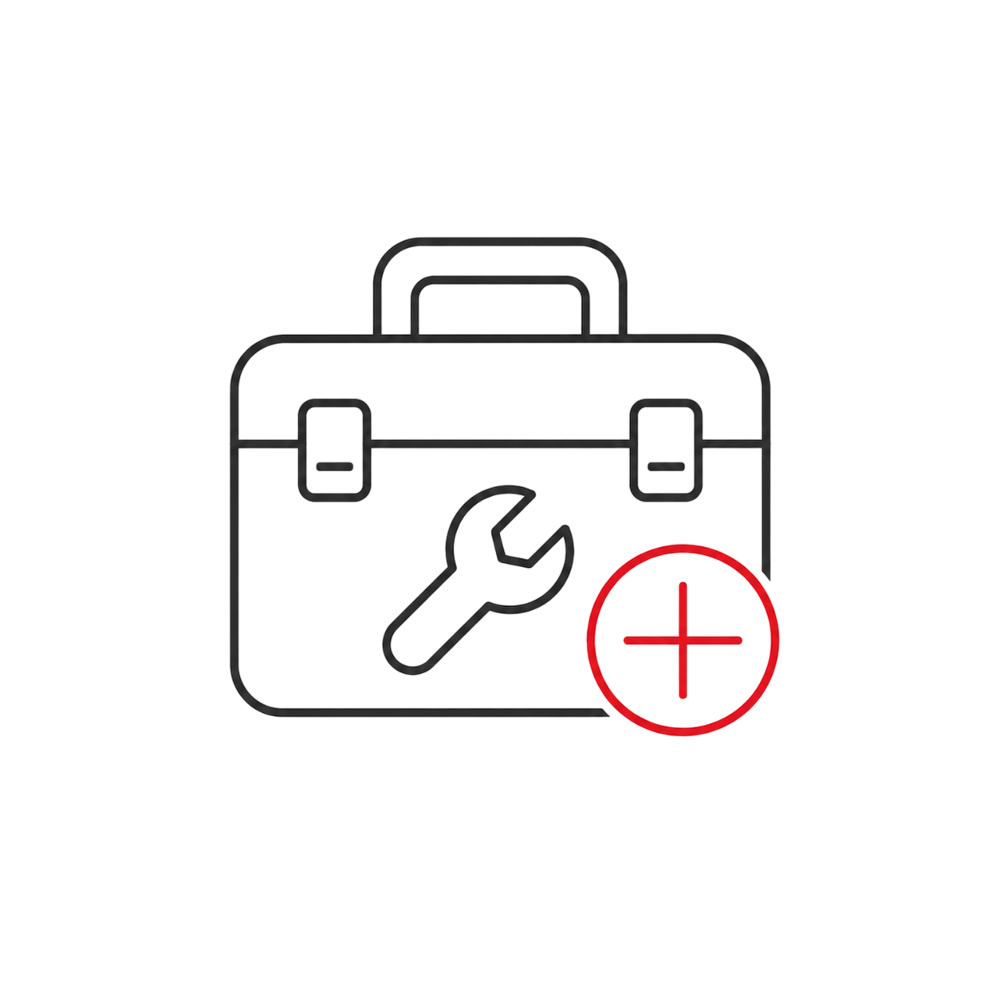
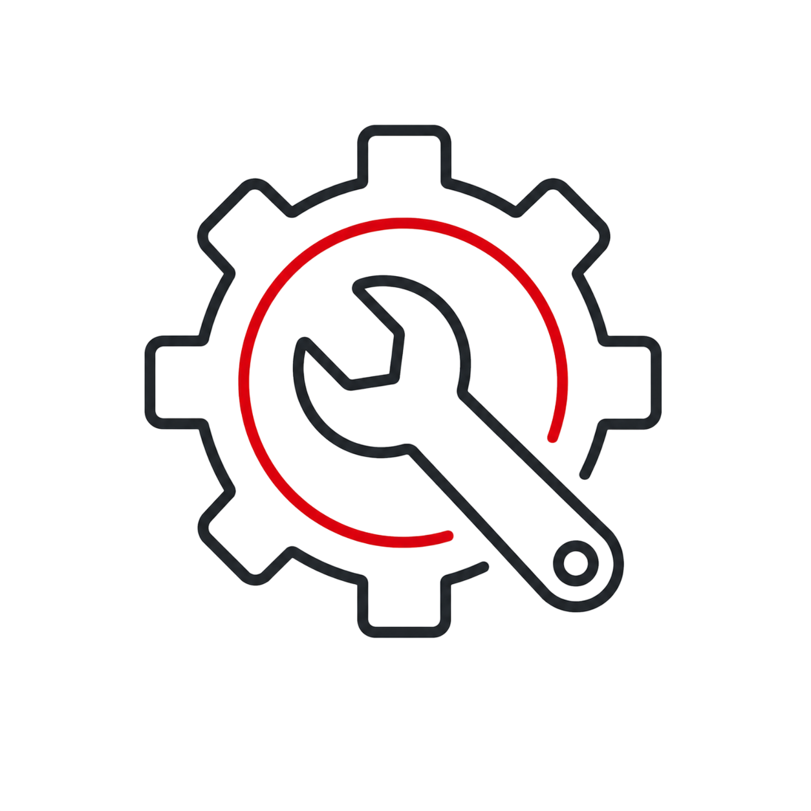
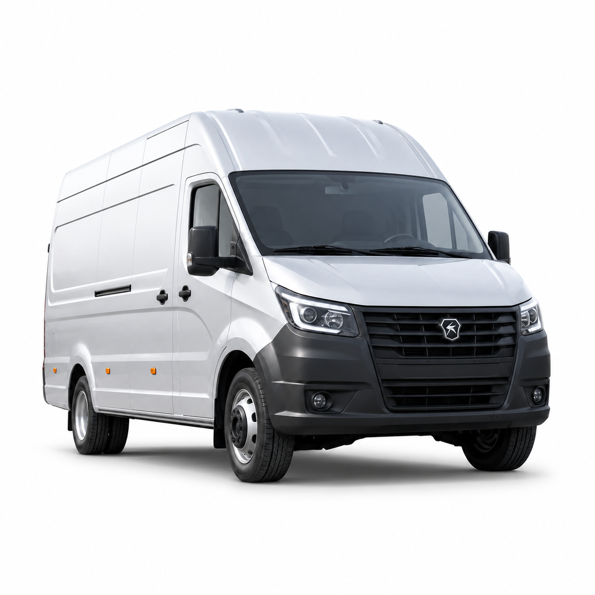
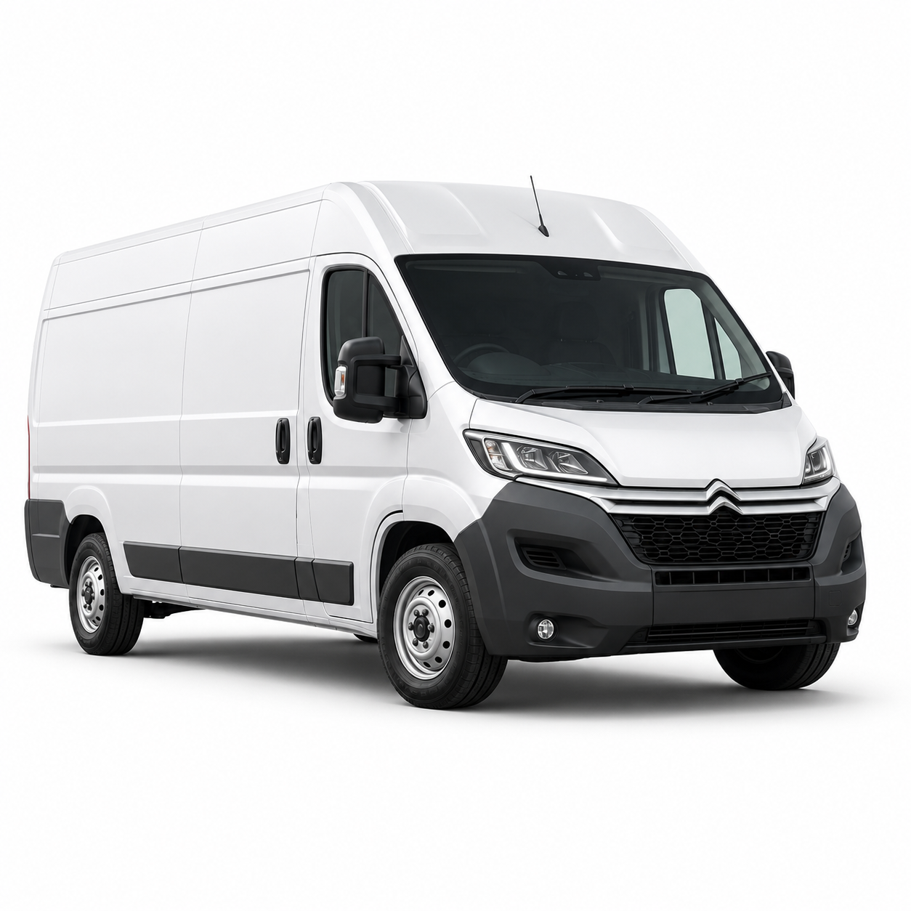
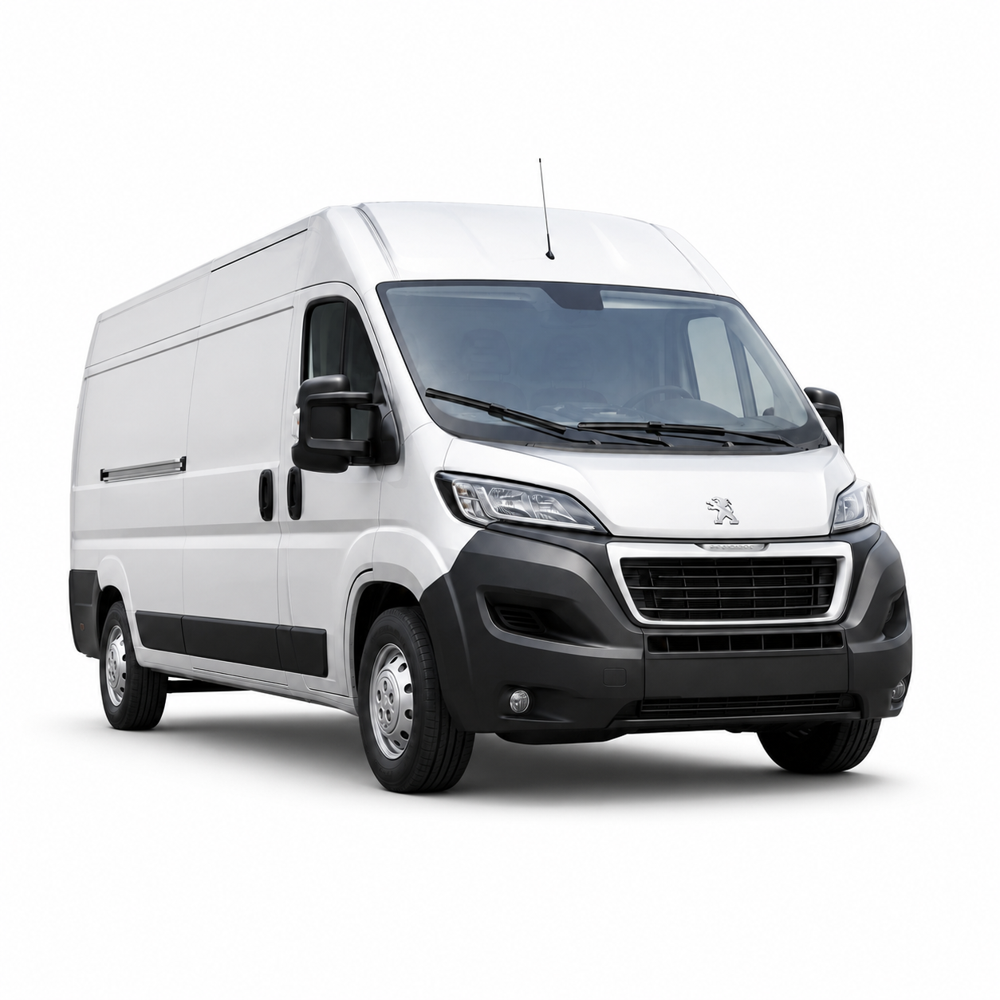
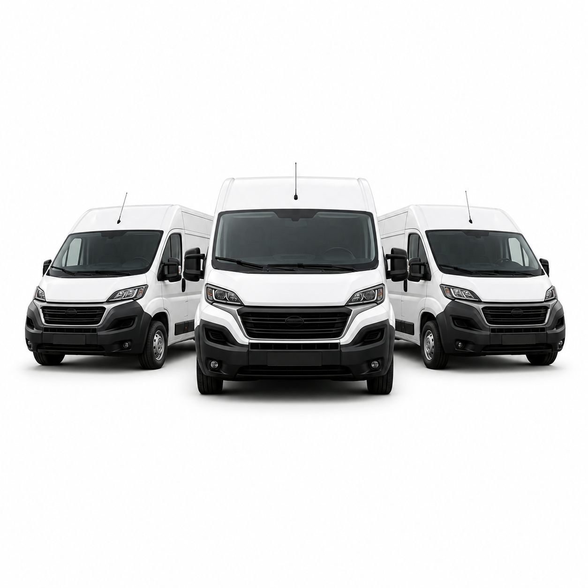

Компьютерная диагностика
Проверяем электронные системы автомобиля, считываем ошибки и анализируем параметры работы блоков управления
Точная диагностика помогает определить причину неисправности и избежать лишних расходов на ремонт.
В AutoMD выполняем комплексную диагностику автомобилей с использованием современного оборудования. Проверяем основные системы автомобиля, находим причины неисправностей и предлагаем оптимальное решение.

Выберите марку и модель автомобиля, чтобы получить точную информацию
Мы начинаем с уточнения задачи и проверки автомобиля. После диагностики мастер объясняет, какие работы нужны, какие запчасти потребуются и сколько это может занять.

Проверяем электронные системы автомобиля, считываем ошибки и анализируем параметры работы блоков управления

Определяем причины нестабильной работы двигателя, потери мощности и повышенного расхода топлива

Проверяем состояние подвески, рулевого управления и элементов, влияющих на безопасность автомобиля

Оцениваем состояние тормозных механизмов и выявляем возможные неисправности

Проверяем работу форсунок, топливного оборудования и системы подачи топлива

Проверяем стартер, генератор, проводку, датчики и другие элементы электрооборудования
Диагностика может потребоваться при плановом обслуживании, появлении неисправностей, подготовке автомобиля к рейсу или после диагностики.
Обратитесь в техцентр, если автомобиль стал работать нестабильно, появились ошибки, посторонние звуки, вибрации, течи, ухудшилась динамика или подошёл срок регламентного обслуживания.
Состав работ зависит от автомобиля, состояния узлов, пробега и выбранной задачи. Перед началом ремонта мастер объясняет, что нужно сделать, сколько это займёт и какие будут стоимость и сроки.





Все автомобилиЦена зависит от модели, состояния автомобиля, объёма работ и выбранных запчастей. По типовым задачам можно заранее посмотреть ориентировочную стоимость, по сложным неисправностям точная цена определяется после диагностики.
AutoMD помогает подобрать новые и б/у запчасти для автомобилей. Детали можно купить через интернет-магазин или установить в техцентре после согласования с менеджером.
В AutoMD с автомобилем работает не один человек, а команда: менеджер уточняет задачу и помогает с записью, мастер проводит диагностику и ремонт, специалист по запчастям подбирает совместимые детали, а приёмщик объясняет клиенту ход работ, сроки и стоимость.
Такой подход помогает быстрее находить причину неисправности, точнее подбирать запчасти и понятнее согласовывать ремонт.

Выполняют диагностику, ТО, ремонт и замену узлов. Работают с коммерческим транспортом и знают особенности популярных моделей

Подбирают новые, оригинальные, аналоговые и б/у детали по марке, модели, году выпуска, VIN или артикулу

Проверяют электронные системы, двигатель, ходовую, тормозную систему, электрику и помогают определить реальную причину неисправности

Принимают автомобиль, фиксируют задачу клиента, согласовывают работы и объясняют, что происходит с машиной на каждом этапе

Помогают выбрать техцентр, записаться на удобное время, уточнить стоимость, наличие запчастей и условия обслуживания
Для популярных моделей многие детали есть в наличии — не нужно ждать поставку неделями
Большинство типовых работ выполняем в день обращения после диагностики и согласования
После ремонта объясняем, что было сделано, и фиксируем условия обслуживания
Основной фокус — Fiat Ducato, Ford Transit, Citroen Jumper, Iveco Daily, Peugeot Boxer и другие коммерческие модели
Подбираем детали, согласовываем стоимость, выполняем ремонт и выдаём автомобиль с гарантией
Обслуживаем личные автомобили, коммерческий транспорт и автопарки компаний


AutoMD помогает компаниям быстрее возвращать автомобили в работу: выполняем диагностику, ТО, ремонт, подбор и установку запчастей для коммерческого транспорта

 Плановое ТОРегламентное обслуживание, замена масла, фильтров, жидкостей и расходников›
Плановое ТОРегламентное обслуживание, замена масла, фильтров, жидкостей и расходников› ДиагностикаКомпьютерная диагностика, проверка двигателя, ходовой, тормозной системы и электрики›
ДиагностикаКомпьютерная диагностика, проверка двигателя, ходовой, тормозной системы и электрики› РемонтРемонтируем основные узлы и системы автомобиля после диагностики и согласования работ›
РемонтРемонтируем основные узлы и системы автомобиля после диагностики и согласования работ› ЗаменаВыполняем замену расходников, узлов и деталей с подбором запчастей под конкретную модель›
ЗаменаВыполняем замену расходников, узлов и деталей с подбором запчастей под конкретную модель› ФорсункиДиагностика, ремонт и восстановление форсунок для коммерческого транспорта›
ФорсункиДиагностика, ремонт и восстановление форсунок для коммерческого транспорта› ЦеныДополнительные сервисы для владельцев автомобилей и юридических лиц›
ЦеныДополнительные сервисы для владельцев автомобилей и юридических лиц›Да. Оставьте контакты — менеджер уточнит модель, год выпуска и подберёт подходящий техцентр.
Предварительную стоимость рассчитаем по модели и задаче. Точную цену подтвердим после диагностики.
Да, подберём совместимую деталь и согласуем установку в одном из техцентров AutoMD.
Многие детали для популярных моделей есть на складе. Остальные закажем после проверки совместимости.
Да, обслуживаем отдельные автомобили и автопарки, предоставляем безналичную оплату и документы.
Гарантийные условия фиксируются в документах и зависят от выполненных работ и установленных деталей.
Можно, но предварительная запись поможет сократить ожидание и заранее проверить наличие запчастей.
Оставьте заявку и укажите количество автомобилей — менеджер свяжется с вами и уточнит задачи.
Оставьте контакты — менеджер уточнит марку, модель, год выпуска и задачу. После этого подскажем, какие услуги доступны и в какой техцентр лучше записаться.
Работает автомобильная диагностика: профессиональная и эффективная, когда перед тестом понятна жалоба или причина обращения. Это помогает сузить область проверки и быстрее найти неисправность.
Профессиональное сервисное обслуживание коммерческих автомобилей в Москве более 10 лет выполняет автотехцентр AutoMD. Современное оборудование, опытные мастера, понятное согласование работ и доступные цены помогают получить стабильный результат.
У разных автомобилей отличаются регламенты ТО, стоимость работ, доступность запчастей и типовые неисправности. Поэтому диагностика всегда начинается с уточнения марки, модели и симптомов.